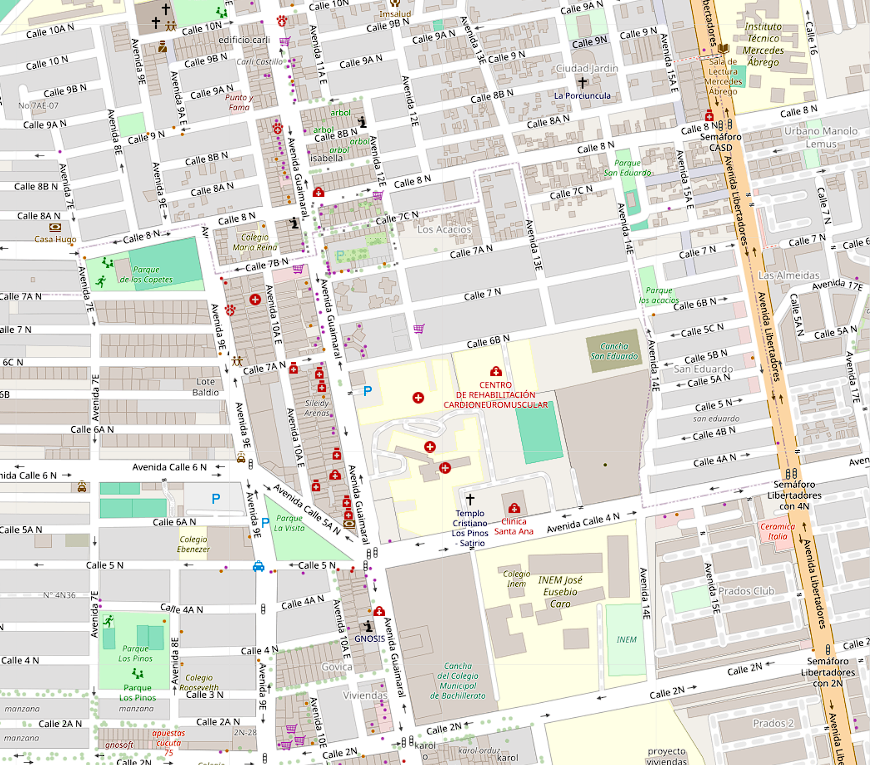

Simulación real de 7 intersecciones semaforizadas. Elige un nivel de tráfico y compara, en la misma corrida, cómo se comporta un esquema de tiempo fijo frente al algoritmo de control adaptativo propuesto en este proyecto.
Rueda del mouse para zoom · arrastrar para mover · pasa el cursor sobre un semáforo para ver su estado
